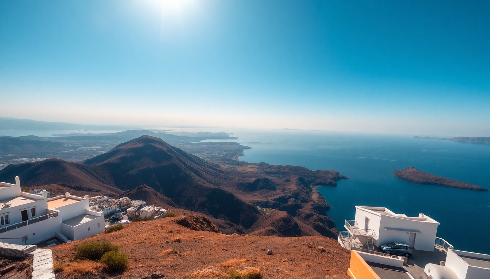

Best Day Trips from Santorini: Volcano, Hot Springs & Oia

I spent a week on Santorini last June, and while the caldera views from our cliff-side hotel in Imerovigli were stunning, the real adventure was getting out on the water. Most visitors stick to the main towns, but the best day trips from Santorini involve a boat, a hike, and a willingness to get your feet wet—literally. Here’s what worked for me, what didn’t, and how to avoid the tourist traps.
Why take a boat tour to Nea Kameni and the hot springs?
The volcanic island of Nea Kameni sits right in the middle of the caldera, and it’s the only place you can actually walk inside a dormant volcano. We booked a half-day catamaran tour from the old port in Fira, and it was the most memorable part of our trip. The boat dropped us at the Nea Kameni dock, and from there we hiked the loose, black-lava trail to the crater rim. It’s a steep 20-minute climb, but the view down into the steaming, sulfur-yellow vents is surreal. I’d recommend sturdy shoes—sandals will leave you slipping.
- Nea Kameni – The active volcanic crater; guided tours run daily from Fira or Athinios port. Wear closed-toe shoes.
- Palea Kameni – The older, smaller island next door, where the hot springs are located. The water is murky but warm (around 30°C).
- Hot springs – You swim from the boat to the shore; the water is stained orange from iron deposits, and it stains light-colored swimsuits. Use an old one.
Are the hot springs worth the swim?
Honestly, the hot springs are more of a novelty than a spa experience. The water is lukewarm, not hot, and the swimming area is a small, rocky cove packed with boats. But the iron-rich mud is supposed to be good for your skin, and the short swim (about 100 meters) through the cool Aegean makes the warm water feel better on arrival. We skipped the mud masks—too many people—but if you want the photo, go for it. The boat crew handed out towels and cheap snorkel gear, which was enough.
- Swim distance: 100–150 meters from boat to shore; not mandatory if you’re not a strong swimmer—some boats have a small ladder at the rocks.
- Best time: Early morning (8 AM departures) to avoid the midday heat and crowds.
- What to bring: A dark-colored swimsuit, water shoes, and a waterproof phone pouch.
Should I spend sunset in Oia or skip the crowds?
Oia’s sunset is famous for a reason—the white-washed domes and blue-domed churches glowing orange are postcard-perfect—but it’s also a circus. We walked up from our hotel in Imerovigli along the caldera path (about 45 minutes) and arrived at the Oia castle ruins at 5 PM to secure a spot. By 6:30, the narrow streets were shoulder-to-shoulder. If you want the view without the crush, head to the Byzantine Castle Ruins (the classic spot) or the quieter Ammoudi Bay below the town. We grabbed a table at Kastro Oia Restaurant on the castle steps—it’s overpriced, but the view is unobstructed and you get a seat.
- Oia Castle Ruins – The iconic sunset viewpoint; arrive by 5 PM in peak season.
- Ammoudi Bay – A small fishing harbor below Oia; quieter, with seafood tavernas like Sunset Ammoudi.
- Alternative sunset spots – Skaro Rock near Imerovigli or the Pyrgos Castle in Pyrgos village—both less crowded.
Is the hike from Fira to Oia worth it?
Yes, but only if you’re fit and start early. The Fira-to-Oia coastal trail runs about 10 kilometers along the caldera edge, passing through Firostefani, Imerovigli, and then open cliffside before descending into Oia. We started at 7 AM from Fira’s main square, and the first two hours were blissfully empty. The path is uneven—cobblestones, dirt, and loose gravel—so hiking shoes are non-negotiable. The views of the caldera and the volcanic islands are relentless. We stopped for iced coffee at Franco’s Bar in Firostefani, which has a terrace hanging over the cliff. The last stretch into Oia is all downhill, but your knees will feel it.
- Distance: 10 km (6.2 miles), 3–4 hours without long stops.
- Start point: Fira’s main square (look for the blue-domed Catholic Cathedral).
- Key stops: Imerovigli’s Skaro Rock (great photo), Firostefani’s blue-domed church.
- Best time: April–May or September–October; June–August is too hot by 10 AM.
What about a day trip to the Red Beach and Akrotiri ruins?
The Red Beach near Akrotiri is a striking strip of volcanic sand and red cliffs, but it’s small and gets packed by 10 AM. We rented a quad bike from a shop in Perissa (€35 for the day) and drove there at 8:30 AM—it was nearly empty. The water is clear and good for snorkeling, but there’s no shade, so bring an umbrella. After an hour, we drove 10 minutes to the Akrotiri Prehistoric City, a Minoan-era settlement preserved under volcanic ash. The covered walkways and preserved frescoes are impressive, but the site is mostly ruins and reconstructions—don’t expect Pompeii-level drama.
- Red Beach – Accessible by foot from the Akrotiri parking lot (10-minute walk); no facilities, so bring water.
- Akrotiri ruins – €12 entry; open 8 AM–8 PM in summer. Allow 1.5 hours.
- Quad bike rental – Shops in Perissa and Kamari; check insurance coverage before driving.
Can I visit the black sand beaches in one day?
Yes, and you should—they’re the best swimming beaches on the island. Perissa Beach and Kamari Beach are both lined with dark volcanic sand, sunbeds, and tavernas. We spent a lazy afternoon at Perissa, renting two sunbeds and an umbrella for €10 from The Beach Bar, which serves decent gyros and cold Mythos beer. The water is deep and clear, and the black sand gets scorching hot by noon—wear flip-flops. Kamari is busier and more built-up, with a long promenade of shops and restaurants. If you want quieter, drive to Vlychada Beach, a smaller cove with a lunar-like landscape.
- Perissa Beach – Quieter than Kamari; sunbeds €8–12; good for families.
- Kamari Beach – More nightlife; restaurants like Seaside for fresh grilled octopus.
- Vlychada Beach – Nude-friendly section at the south end; no sunbeds, just wild shore.
FAQ
Is the Nea Kameni volcano tour safe for kids? Yes, generally. The hike is short but steep, and the trail is loose lava rock. Kids over 6 can manage with good shoes and a parent’s hand. The hot springs swim is shallow, but the boat ride can be choppy—bring seasickness pills.
What’s the best time of year for these day trips? Late April to early June and September to mid-October. July and August are brutally hot for hiking and the boats are packed. We went in June and had comfortable mornings but sweaty afternoons.
Can I do the volcano tour and Oia sunset in one day? Yes, but it’s a long day. Many half-day tours return to Fira by 2 PM, then you can take a bus or taxi to Oia for sunset. Book a tour that starts at 8 AM to give yourself enough time.
Conclusion
- Nea Kameni is the highlight—hike the crater for the best caldera views.
- Hot springs are a fun novelty; don’t expect a spa.
- Oia sunset is worth seeing once, but arrive early or pick a quieter spot like Ammoudi Bay.
- Fira-to-Oia hike is the best way to see the caldera—start at dawn.
- Red Beach and Akrotiri make a solid half-day combo; rent a quad bike for flexibility.